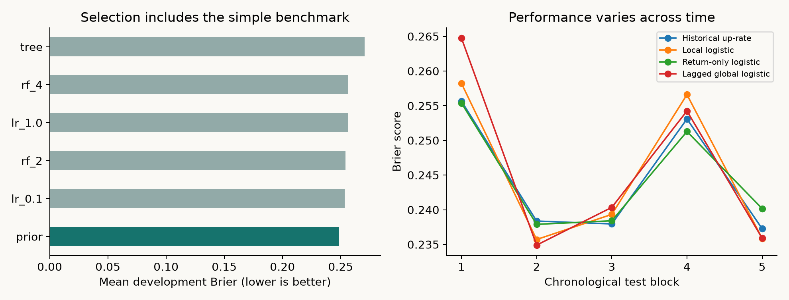

The finding
The historical up-rate wins the three development windows against logistic regression, a decision tree and random forests. The locked selection policy therefore remains a frequency estimator during subsequent rolling evaluation. Its accuracy is 56.94%; that figure alone is misleading because always predicting “up” achieves the same accuracy.
Local logistic regression changes Brier loss by +0.001006 relative to the up-rate benchmark, with a pointwise 95% block-bootstrap interval [-0.002279, +0.004296]. Lower is better. The return-only ablation has a small apparent gain (-0.000273), but its interval [-0.001266, +0.000908] crosses zero. These results do not establish either useful predictive skill or equivalence.
Decision: retain the simple probabilistic benchmark for this dataset. No trading strategy, profitability, economic impact, external validation or admissions endorsement is claimed.
Time is part of the model
First 300 usable rows. Expanding fits before validation starts 150, 200 and 250; 50 validation rows each.
Select the lowest mean development Brier among six candidates, including the historical prior. Do not select again on the test results.
Refit the locked model every 50 rows. Five test blocks: 50, 50, 50, 50 and 16. A one-row purge separates training and evaluation.
At an origin after Istanbul close on day t, predict whether the ISE local-currency return on the next observed trading day is positive. Features are return at t and trailing 5/20-day return means and sample standard deviations. All rolling features use only the current and previous rows. StandardScaler and PCA are fitted inside each training window. Every boundary asserts that the last training target date is strictly earlier than the first evaluation origin.
Models: logistic C ∈ {0.1, 1}; decision tree depth 3; random forests depth 2 or 4, 200 trees. Tree models use minimum leaf size 20 and seed 20261029. Threshold is fixed at 0.5. The PCA ablation retains two components; all logistic ablations use C=0.1. Hyperparameters and windows were encoded before the first numerical run, without an independent preregistration.
Secondary comparisons remove all but the current return, compress local features with PCA, add seven foreign-market returns lagged by one dataset row, and restrict the selected policy to the latest 252 training rows. Lagging foreign series reduces obvious closing-time leakage; the source does not provide release timestamps or data vintages, so real-time availability is an assumption, not verified. These comparisons are exploratory; none replaces the locked primary policy.

Every comparison, including the awkward ones
Brier score is the primary proper probability loss. Log loss, accuracy and AUC are secondary. Pooled AUC of the refitted prior can differ from 0.5 because its probability changes between blocks; within every block the prior's AUC is 0.5. This is not within-block ranking skill.
| brier | log_loss | accuracy | auc | |
|---|---|---|---|---|
| model | ||||
| Constant 0.5 | 0.250000 | 0.693147 | 0.569444 | 0.500000 |
| Lagged global logistic | 0.247623 | 0.688766 | 0.574074 | 0.491214 |
| Local logistic | 0.246611 | 0.686515 | 0.578704 | 0.489204 |
| PCA + logistic | 0.246979 | 0.687133 | 0.569444 | 0.464551 |
| Historical up-rate | 0.245605 | 0.684344 | 0.569444 | 0.446062 |
| Return-only logistic | 0.245332 | 0.683777 | 0.569444 | 0.498208 |
| Selected / trailing 252 | 0.246230 | 0.685608 | 0.569444 | 0.441516 |
| Development-selected policy | 0.245605 | 0.684344 | 0.569444 | 0.446062 |

Development scores and selection evidence
| Mean Brier | |
|---|---|
| model | |
| prior | 0.248851 |
| lr_0.1 | 0.253492 |
| rf_2 | 0.254099 |
| lr_1.0 | 0.256114 |
| rf_4 | 0.256433 |
| tree | 0.270625 |
Robustness: block lengths 5, 10 and 20
4,000 paired resamples at each block length; seed fixed. Pointwise intervals are not multiplicity-adjusted. Stationarity within the evaluation period is approximate. Zero-width intervals for “selected” are an identity: it selected the same prior, not certainty about future performance.
| model | block | delta_brier | low | high |
|---|---|---|---|---|
| Constant 0.5 | 5 | 0.004395 | -0.005140 | 0.014029 |
| Constant 0.5 | 10 | 0.004395 | -0.005400 | 0.014608 |
| Constant 0.5 | 20 | 0.004395 | -0.006252 | 0.014648 |
| Lagged global logistic | 5 | 0.002019 | -0.003928 | 0.007931 |
| Lagged global logistic | 10 | 0.002019 | -0.002909 | 0.007337 |
| Lagged global logistic | 20 | 0.002019 | -0.002917 | 0.007291 |
| Local logistic | 5 | 0.001006 | -0.003095 | 0.004811 |
| Local logistic | 10 | 0.001006 | -0.002279 | 0.004296 |
| Local logistic | 20 | 0.001006 | -0.001939 | 0.004151 |
| PCA + logistic | 5 | 0.001374 | -0.000887 | 0.003736 |
| PCA + logistic | 10 | 0.001374 | -0.000888 | 0.003810 |
| PCA + logistic | 20 | 0.001374 | -0.000796 | 0.003834 |
| Historical up-rate | 5 | 0.000000 | 0.000000 | 0.000000 |
| Historical up-rate | 10 | 0.000000 | 0.000000 | 0.000000 |
| Historical up-rate | 20 | 0.000000 | 0.000000 | 0.000000 |
| Return-only logistic | 5 | -0.000273 | -0.001308 | 0.000800 |
| Return-only logistic | 10 | -0.000273 | -0.001266 | 0.000908 |
| Return-only logistic | 20 | -0.000273 | -0.001295 | 0.000787 |
| Selected / trailing 252 | 5 | 0.000625 | -0.001055 | 0.002351 |
| Selected / trailing 252 | 10 | 0.000625 | -0.001038 | 0.002393 |
| Selected / trailing 252 | 20 | 0.000625 | -0.001149 | 0.002499 |
| Development-selected policy | 5 | 0.000000 | 0.000000 | 0.000000 |
| Development-selected policy | 10 | 0.000000 | 0.000000 | 0.000000 |
| Development-selected policy | 20 | 0.000000 | 0.000000 | 0.000000 |
Prediction-level CSV · Time boundaries · Metrics · Source hash & environment
Data provenance & limits
Akbilgic, O. (2013). ISTANBUL STOCK EXCHANGE [Dataset]. UCI Machine Learning Repository. doi:10.24432/C54P4J. The UCI dataset page states CC BY 4.0, verified 2026-10-29. The original provider organized returns from imkb.gov.tr and finance.yahoo.com around Istanbul working days.
The workbook contains 536 dated rows from 2009-01-05 to 2011-02-22. The catalogue prose says “Jun 5, 2009”; the workbook begins January 5, 2009. This study follows the parsed workbook and records that discrepancy. Nineteen warm-up rows and one final row without a next-day label are excluded, leaving 516 rows. The two columns named ISE are read positionally as local and USD returns; only the first is the target. No missing numeric observations or duplicate dates are accepted. Inputs are downloaded into an ignored cache rather than redistributed.
Limitations: one market, approximately two years, only 216 test days, no modern regime, no corporate-action or price-feed audit, no execution model, and limited power. The final 16-day block is especially unstable. Additional markets and a prospective evaluation would be required before generalizing. The original paper is cited as dataset context; this experiment is not a reproduction of its RBF forecasting model.
Reproduce and challenge the result
Python 3.12.10; use an isolated environment and the project-specific pins. Run the following from this project directory:
python -m pip install -r requirements.txt python run.py python -m unittest discover -s tests -v python verify.py
The first run downloads the UCI workbook; later runs reuse the ignored cache. Outputs include all per-day probabilities, development scores, test metrics, split boundaries, uncertainty tables, figures and this report. Verification recomputes every saved metric, all interval endpoints and development selection, checks source SHA-256, and compares a fresh complete rerun against committed reference tables. The tests perturb future inputs to detect feature look-ahead.
Course origin, contributions & AI assistance
This project grows out of Lab 6, “Traditional Machine Learning in Financial Data Analysis.” The instructor supplied the original teaching framework: next-day direction classification, logistic/tree/forest examples, chronological splitting, training-only scaling, K-means/PCA demonstrations and five exercises. Jiayu Yan's submitted coursework completed those exercises within that framework. The instructor's name was not available in the supplied files.
This public extension uses a new implementation and a different, openly licensed dataset. The extension adds development-only selection including the baseline, purged rolling evaluation, probability losses, feature ablations, block-bootstrap sensitivity, reproducibility tests and this English report. AI assisted research design, coding, execution, analysis, writing and verification. These contributions are not presented as unaided student work. The original submission remains private and unchanged; neither the instructor's code nor the course dataset is included because redistribution permission was not established.
Original implementation is covered by the repository's MIT license; the source dataset remains CC BY 4.0. This is an undergraduate portfolio research extension, not a peer-reviewed publication.